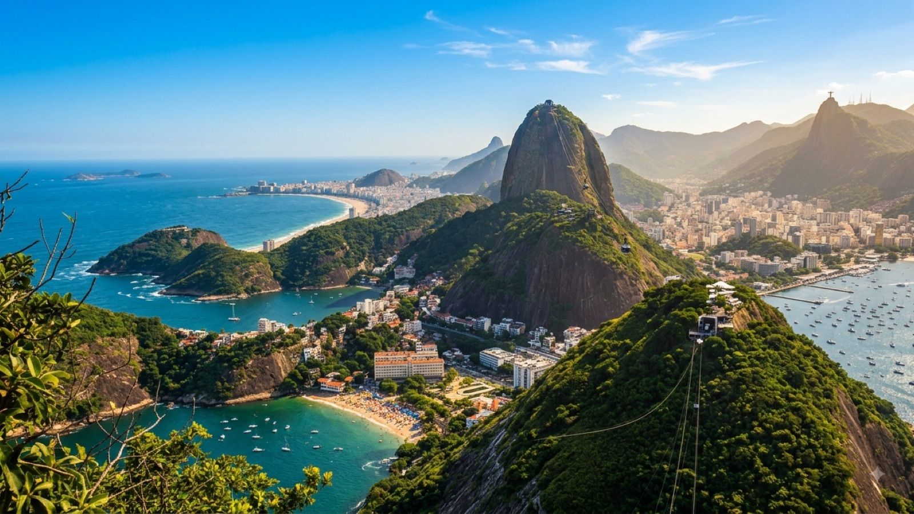

טיול בברזיל 2026 — המדריך המלא

ברזיל היא לא עוד תחנה במסלול — היא יבשת בתוך היבשת. היא מחזיקה כמעט מחצית משטחה של דרום אמריקה, גדולה מפרו, בוליביה, צ׳ילה, ארגנטינה, קולומביה ואקוודור גם יחד, ומדברת שפה אחרת מכולן. מריו לסלבדור יש 1,600 קילומטר, ומריו למנאוס כמעט 4,000. הטעות הראשונה של רוב המטיילים היא לנסות לראות אותה. הצעד הראשון בתכנון טיול בברזיל הוא לוותר.
בשביל מטיילים ישראלים ברזיל היא בדרך כלל הקצה: הקצה של הגל היורד שהגיע ממקסיקו ומרכז אמריקה, או הקצה של הגל העולה שסיים את פטגוניה, בוליביה ופרו. בשני המקרים היא מרגישה כמו החלפת ערוץ — במקום ספרדית והרי אנדים מגיעים סמבה, פורטוגזית, לחות וחוף שנמשך אלפי קילומטרים. המדריך הזה עוזר לכם להחליט איזו ברזיל אתם רוצים, כמה זה עולה ואיך מזיזים את עצמכם במדינה בגודל כזה.
מתי כדאי לנסוע לברזיל?
לברזיל אין עונה אחת. היא נמתחת מקו המשווה ועד קו רוחב 33 דרום, ולכן השאלה "מתי הכי טוב" חסרת משמעות עד שמחליטים לאן. הנה החלוקה שבאמת משנה:
- הדרום־מזרח (ריו, סאו פאולו, פאראטי, פלוריאנופוליס) — קיץ לוהט ולח בערך בין דצמבר למרץ, עם 30–40 מעלות, סופות אחר צהריים קצרות וחופים מלאים בברזילאים בחופשה. אפריל–יוני וספטמבר–נובמבר הם הזמן הנעים באמת: מזג אוויר יציב, פחות המון, מחירים שפויים. יוני–אוגוסט הוא החורף — בפלוריאנופוליס זה אומר 15 מעלות וים קר, בריו זה עדיין 22–25 ושמש.
- הצפון־מזרח (סלבדור, ג׳ריקאקוארה, רסיפה, נאטאל) — חם כל השנה, סביב 28–32 מעלות בלי הבדל של ממש בין החודשים. מה שכן משתנה זה הגשם: בערך אפריל עד יולי הם החודשים הרטובים, ובשאר השנה שמש כמעט רציפה. אוגוסט–דצמבר הם החלון הקלאסי לצפון־מזרח, וגם עונת הרוחות שמושכת גולשי רוח לג׳ריקאקוארה.
- האמזונס (מנאוס) — אין כאן "יבש" ו"גשום" אלא רטוב ורטוב פחות. עונת המים הגבוהים, בערך פברואר–יוני, מציפה את היער וכל התנועה היא בסירה בין צמרות העצים — יפהפה ומוזר. עונת המים הנמוכים, בערך אוגוסט–נובמבר, חושפת חופי חול נהריים, מאפשרת הליכות ג׳ונגל וקלה יותר לצפייה בחיות. גשם יכול לרדת בכל יום בשנה.
- הפנטנאל — כאן ההבדל דרמטי. העונה היבשה, בערך מאי עד ספטמבר, מרכזת את החיות סביב מקורות מים מצטמצמים, והצפייה בהן טובה פי כמה. בשיא הרטוב, בערך דצמבר–מרץ, חלק גדול מהשטח מוצף וחלק מהלודג׳ים פשוט סגורים.
- לנסויס מרנייסס — היחיד ברשימה עם חלון צר ממש. הלגונות בין הדיונות הן מי גשם שהצטברו, ולכן הן מלאות בערך מיוני עד ספטמבר. מגיעים באוקטובר ותמצאו דיונות יפות עם מעט מאוד מים; מגיעים בפברואר ותמצאו גשם בלי לגונות.
ומעל הכול מרחף תאריך אחד: הקרנבל, שנופל בפברואר או במרץ ומשתנה כל שנה לפי לוח השנה הנוצרי. זה המגנט הגדול ביותר בלוח הזמנים של ברזיל — הוא מכתיב מחירי טיסות, מייקר לינה פי שניים עד ארבעה ומחייב הזמנה חודשים מראש. אם אתם מכוונים אליו, יש לנו מדריך נפרד ומלא לקרנבל בברזיל עם התאריכים, ההבדלים בין הערים והכרטיסים לסמבודרומו.
ויזה, כניסה ומעברי גבול
בעלי דרכון ישראלי לא צריכים ויזה לברזיל ומקבלים בדרך כלל 90 יום בכניסה, עם תקרה של כ-180 יום בתוך תקופה של שנה. הדרכון צריך להיות בתוקף לפחות שישה חודשים, וכדאי שתהיה בידכם הוכחה כלשהי ליציאה מהמדינה — כרטיס המשך או אפילו הזמנת אוטובוס. נשאלת לעיתים רחוקות, אבל כשנשאלת, נשאלת בגבול יבשתי.
נקודה בריאותית ששווה לבדוק מראש: ברזיל עצמה לא דורשת חיסון קדחת צהובה מנוסעים שמגיעים מישראל, אבל החיסון מומלץ בחום לאזורי האמזונס, הפנטנאל וחלקים מהפנים, ויש מדינות שכנות שכן דורשות אישור חיסון ממי שמגיע אליהן מברזיל. אם המסלול שלכם ממשיך הלאה — בדקו את הדרישות של המדינה הבאה, לא רק של ברזיל.
מעברי הגבול היבשתיים המרכזיים:
- פוס דו איגואסו — צומת הגבולות המרכזי והשימושי ביותר. גשר אחד לפוארטו איגואסו שבארגנטינה, גשר שני לסיודד דל אסטה שבפרגוואי, ושני צדדים של מפלי איגואסו במרחק נסיעה קצרה. אפשר לראות את הצד הברזילאי בבוקר ואת הצד הארגנטינאי למחרת, וזה בדיוק מה שרוב המטיילים עושים.
- לבוליביה — קורומבה (Corumbá) מול פוארטו קיחארו. זהו גם שער הכניסה הדרומי לפנטנאל, ומשם יוצאת הרכבת המפורסמת לסנטה קרוס. מעבר איטי ולא נוח, אבל הגיוני מאוד אם ממילא רציתם פנטנאל.
- לאורוגוואי — צ׳ואי (Chuí), עיירה מוזרה שרחוב ראשי אחד חוצה אותה, וכל צד שלו במדינה אחרת. מכאן אוטובוסים ישירים למונטווידאו ולפונטה דל דיאבלו.
- לקולומביה ולפרו — טבטינגה (Tabatinga) בלב האמזונס, צמודה ללטיסיה הקולומביאנית. מעבר לוגיסטי לא פשוט שמגיעים אליו בטיסה או בכמה ימי שיט, אבל מסלול נהדר למי שיש לו זמן.
וכאן ההערה החשובה: בברזיל, מעבר גבול יבשתי הוא לעיתים קרובות ההחלטה הפחות נכונה. מסלול שנראה על המפה כמו "רק לרדת דרומה" יכול להיות 30 שעות אוטובוס, ובאותו כסף בערך יש טיסה של שלוש שעות. אלא אם המעבר עצמו הוא חלק מהחוויה — כמו איגואסו או קורומבה — שקלו לטוס.
כמה עולה טיול בברזיל?
ברזיל יושבת באמצע הטבלה של דרום אמריקה: יקרה יותר מבוליביה ומפרו, זולה יותר מצ׳ילה ומאורוגוואי. המטבע הוא ריאל ברזילאי (Real, BRL), ושער החליפין נע בשנים האחרונות בסביבות 5–6 ריאל לדולר — תנודתי מאוד, אז המחירים למטה מובאים בדולרים.
| הוצאה | מחיר משוער |
|---|---|
| מיטה בחדר משותף בהוסטל | 12–22$ (65–120 ריאל) |
| חדר פרטי / פוזאדה בסיסית | 30–55$ |
| ארוחת prato feito או בופה por quilo | 4–8$ (20–45 ריאל) |
| ארוחת ערב במסעדה באיפנמה או בפלורינייו | 12–25$ |
| בירה גדולה או קאיפירינייה על החוף | 1.5–4$ |
| אוטובוס לילה בין־עירוני (מחלקת executivo/leito) | 25–60$ |
| טיסת פנים בהזמנה מראש (Gol / Latam / Azul) | 40–90$ |
| מקום בהמוק על ספינת נהר, מנאוס–בלם (4–5 ימים) | 60–110$ |
| סיור אמזונס עם לודג׳, 3 ימים כולל הכול | 150–300$ |
| סיור פנטנאל, 3 ימים כולל הכול | 200–350$ |
| כניסה למפלי איגואסו (צד ברזילאי) | כ-20$ |
שורה תחתונה: מטייל תרמילאי סביר מוציא 40–55 דולר ביום — לינה, אוכל ותחבורה מקומית, בלי תוספות גדולות. מה שמנפח את התקציב בברזיל הוא לא היום־יום אלא המרחקים והחוויות הגדולות: שבועיים "רגילים" יעמדו על 600–800 דולר, אבל אותם שבועיים עם שתי טיסות פנים וטיול פנטנאל יטפסו בקלות ל-1,200–1,500.
איך מתניידים בברזיל?
בכל מדינה אחרת ביבשת התשובה היא אוטובוסים. בברזיל, בגלל הגודל, התשובה הכנה היא שלרוב כדאי לטוס.
טיסות פנים — שלוש חברות עיקריות (Gol, Latam, Azul) מפעילות רשת פנימית צפופה. טיסה שמוזמנת שבועיים־שלושה מראש עולה בדרך כלל 40–90 דולר, כלומר פחות או בערך כמו אוטובוס לילה על אותו קטע — ובמקום 26 שעות היא לוקחת שלוש. זו לא הוצאה, זו קניית ימי טיול. שימו לב שמחיר הבסיס לרוב לא כולל מזוודה, ושחלק מהיעדים התרמילאיים (ג׳ריקאקוארה, למשל) נגישים דרך שדות תעופה קטנים שמופעלים בעיקר על ידי Azul.
אוטובוסים בין־עירוניים — כשהמרחק סביר, האוטובוסים בברזיל מצוינים באמת. מחלקת executivo נותנת מושב רחב שנשען חזק, ו-leito היא כמעט מיטה. הרשת יוצאת מרודוביאריה (תחנה מרכזית) בכל עיר, והאתרים ClickBus או Buser חוסכים תור. הקטעים שבהם אוטובוס הוא הבחירה הנכונה: ריו–פאראטי, ריו–סאו פאולו, סלבדור–שאפאדה דיאמנטינה, קוריטיבה–פלוריאנופוליס.
סירות באמזונס — ופה נגמרת ההיגיון ומתחילה החוויה. על נהרות האמזונס פועלות ספינות נוסעים איטיות שבהן אין מושבים אלא סיפון פתוח שבו כולם תולים המוק זה ליד זה. מנאוס לבלם לוקחת ארבעה־חמישה ימים במורד הזרם, מנאוס לטבטינגה כשישה במעלה. ארוחות פשוטות כלולות, האינטרנט לא קיים, והיום עובר בקריאה, בקלפים, בשיחות עם משפחות מקומיות ובצפייה ביער שלא נגמר. זו לא תחבורה יעילה — זו אחת החוויות החזקות שיש בברזיל.
המסלול המומלץ
אין מסלול אחד לברזיל, וכל ניסיון לבנות אחד כזה מסתיים באדם עייף שראה שדות תעופה. במקום זה, הנה שתי אפשרויות של שבועיים — בחרו אחת. שתיהן שלמות בפני עצמן, ואף אחת מהן לא מרגישה חסרה.
מסלול א׳ · הדרום־מזרח הקלאסי — ריו והחופים
המסלול המתאים לביקור ראשון בברזיל, לזוגות ולמי שרוצה שילוב של עיר גדולה, איים וגלישה. הכול קרוב יחסית, ורק קטע אחד דורש טיסה.
- ימים 1–5 · ריו דה ז׳ניירו — עיר שבנויה בין הרי גרניט לים, ומצליחה להיות גם מטרופולין וגם חוף. קופקבנה ואיפנמה, הפסל בקורקובדו והר הסוכר בשקיעה, שכונת סנטה תרזה הקולוניאלית, מדרגות סלרון, מסיבת רחוב בלאפה בשישי וגלישה או הליכה לפדרה דה גאבאה. חמישה ימים לא יותר מדי — ריו לא נגמרת.
- ימים 6–8 · איליה גרנדה — אי ללא כבישים וללא מכוניות, שלוש שעות אוטובוס ועוד מעבורת מריו. עוברים בו ברגל בין חופים דרך שבילי יער אטלנטי; לופס מנדס נחשב לאחד היפים בברזיל, והדרך אליו היא הליכה של כשעתיים שהיא חצי מהעניין. ההוסטלים מרוכזים בכפר אברהאו.
- ימים 9–10 · פאראטי — עיירה קולוניאלית מרוצפת אבן על שפת המפרץ, שהרחובות שלה מוצפים בגאות מלאה מכוונת מהמאה ה-18. בסיס לשייט של יום בין איים קטנים, למפלים ולמזקקות קשאסה בסביבה. ערב אחד כאן מרגיש כמו הפסקה מכל השאר.
- ימים 11–14 · פלוריאנופוליס — טיסה קצרה מריו או מסאו פאולו לאי עם יותר מארבעים חופים: לגואינייה לגולשים, פראיה מולי לאווירה, קמפצ׳ה לאיזון בין השניים, וצפון האי לים רגוע. פלוריאנופוליס היא גם עיר סטודנטים עם חיי לילה רציניים, וזה סוף מתאים לשבועיים.
יש עוד כמה ימים? הוסיפו את מפלי איגואסו בטיסה מסאו פאולו — ומשם אפשר להמשיך ישר לארגנטינה או לפרגוואי.
מסלול ב׳ · הצפון־מזרח — סלבדור, חופים ודיונות
המסלול שפחות ישראלים עושים ושמחזיר את התחושה של טיול תרמילאים אמיתי: חם כל השנה, זול יותר, פחות אנגלית והרבה יותר תרבות אפרו־ברזילאית.
- ימים 1–4 · סלבדור — הבירה הראשונה של ברזיל ובירת התרבות האפרו־ברזילאית: פלורינייו, העיר העתיקה על הצוק, עם בתים בצבעי פסטל וכנסיות ברוקיות; קפוארה ברחוב, תופי אולודום, אוכל באהיאני ששונה מכל דבר אחר בברזיל (מוקקה, אקראז׳ה), וקנדומבלה — הדת האפרו־ברזילאית — שעדיין חיה כאן ולא כמופע.
- ימים 5–7 · מורו דה סאו פאולו — כפר חוף על אי, שעתיים בקטמרן מסלבדור, בלי מכוניות ועם חופים ממוספרים פשוט לפי סדר: הראשון שקט, השני הוא מסיבת החוף, השלישי והרביעי רגועים ויפים יותר. מקום קלאסי לתקוע שלושה ימים ולהישאר חמישה.
- ימים 8–10 · ג׳ריקאקוארה — טיסה לפורטלזה ואז נסיעה בג׳יפ על החול. "ג׳רי" היא כפר דייגים בלי כביש סלול, שהרחובות שלו הם חול והשעה החשובה בו היא השקיעה על דיונת הפור־דו־סול, כשכל הכפר עולה לצפות. אחד ממרכזי הקייטסרף הגדולים בעולם, ואחת האווירות הכי מיוחדות בברזיל.
- ימים 11–14 · לנסויס מרנייסס — הסיום. אפשר להגיע בטרנספר לאורך החוף מג׳רי (יומיים דרך הכפרים) או בטיסה דרך סאו לואיס. הפארק הוא מדבר דיונות לבנות שביניהן, בחודשי הקיץ שאחרי הגשמים, מתמלאות אלפי לגונות מי גשם בצבע תכלת. בסיסים: ברירינייס לנוחות, אטינס לאווירה תרמילאית ולגונות קרובות יותר.
מסלול ב׳ מתחבר בקלות לשאפאדה דיאמנטינה — הרמה ההררית שש שעות מסלבדור, עם קניונים, מפלים ומערות, ואחד מאזורי הטרקים הטובים בברזיל. שלושה־ארבעה ימים שם משנים את אופי הטיול.
ומה עם האמזונס והפנטנאל? שניהם תוספות, לא חלק ממסלול חוף — כל אחד מהם דורש טיסה ייעודית ולפחות שלושה־ארבעה ימים. לאמזונס טסים למנאוס וממשיכים ללודג׳ בג׳ונגל (או לספינה, אם יש זמן). לפנטנאל מגיעים דרך קויאבה בצפון או דרך קמפו גראנדה וקורומבה בדרום. אם אתם מוסיפים רק אחד מהם ואתם באים בשביל חיות — הוסיפו את הפנטנאל, ולמה, בסעיף הבא.
מה חובה לראות בברזיל?
- ריו דה ז׳ניירו — לא בגלל הפסל. בגלל הרגע שבו אתם עולים על הר בתוך העיר ורואים מפרץ, יער, גורדי שחקים וחוף באותו מבט. ריו היא אחת הערים היפות בעולם, וזו לא קלישאה תיירותית אלא עובדה גיאוגרפית.
- מפלי איגואסו — 275 מפלים על גבול ברזיל־ארגנטינה. הצד הברזילאי נותן את המבט הפנורמי הרחב (חצי יום מספיק), הצד הארגנטינאי נותן את ההליכה בתוך המפלים ואת גרון השטן (יום שלם). שווה לראות את שניהם, ובסדר הזה.
- הפנטנאל — הביצה הטרופית הגדולה בעולם, ובגלל השטח הפתוח שלה גם המקום הטוב באמת בברזיל לראות חיות בר: קאיימנים, קאפיברות, אנקונדות, טוקנים ומאות מיני ציפורים — ובעונה היבשה, סיכוי אמיתי לראות יגואר לאורך נהר הקוויאבה. זה החלק שרוב המטיילים מגלים מאוחר: הפנטנאל טוב מהאמזונס לצפייה בחיות. באמזונס היער סגור והחיות מסתתרות בחופה שלושים מטר מעליכם; בפנטנאל השדה פתוח ורואים.
- לנסויס מרנייסס — נוף שאין לו מקבילה: אלף קילומטרים רבועים של דיונות לבנות שביניהן לגונות תכלת שנוצרו מגשם, מתחלפות בכל שנה מחדש. הליכה יחפה בין הדיונות וטבילה בלגונה היא אחת התמונות שנשארות מהטיול.
- האמזונס וסלבדור — שני הפכים שכדאי לא לוותר עליהם: האמזונס בגלל הגודל וה"מפגש המים" מול מנאוס, שבו שני נהרות בצבעים שונים זורמים זה לצד זה קילומטרים בלי להתערבב; סלבדור בגלל שהיא הלב התרבותי של ברזיל ולא רק היעד שלה.
בטיחות בברזיל — מה באמת צריך לדעת
בואו נהיה מדויקים במקום מבוהלים. פשיעה עירונית בברזיל היא נושא אמיתי, בעיקר בערים הגדולות, ובעיקר בצורה של גניבה ושוד ולא של אלימות אקראית כלפי תיירים. רוב המטיילים מסיימים חודש בברזיל בלי תקרית אחת, וזה קורה בין השאר כי הם מאמצים במהירות את ההרגלים של המקומיים. הברזילאים עצמם לא מסתובבים בריו כמו שמסתובבים בתל אביב, וכדאי פשוט לחקות אותם:
- לצאת מהבית עם מינימום. מזומן ליום, כרטיס אחד, טלפון. הדרכון, שאר הכרטיסים והמצלמה — בכספת. הרבה מטיילים מחזיקים טלפון ישן וזול לרחוב ואת הטוב לחדר.
- לא לשלוף טלפון ברחוב. זה ההרגל המקומי הכי בולט: אנשים נכנסים לחנות או לבית קפה כדי להסתכל במפה, לא עוצרים על המדרכה עם המכשיר ביד. גניבת טלפונים מאופנוע היא התרחיש הנפוץ.
- אחרי חשכה — נוסעים, לא הולכים. אובר, 99 או מונית מוזמנת. גם למרחק של שלושה בלוקים. זה עולה כמה דולרים ומוחק את רוב הסיכון.
- חוף וזמן. חופי ריו בטוחים ומלאי אנשים ביום ומתרוקנים בלילה — אחרי חשכה לא הולכים על החול. בחופים לוקחים מעט חפצים ולא משאירים תיק על המגבת בזמן שנכנסים למים.
- לדעת איפה אתם. בריו הבדל של שני רחובות משנה. בקופקבנה, איפנמה, בוטפוגו, פלמנגו וסנטה תרזה מסתובבים בנוחות; מרכז העיר מת בלילות ובסופי שבוע; אזורים מסוימים בצפון העיר פשוט לא רלוונטיים למטיילים. שאלו בהוסטל, זו העצה הכי מעודכנת שתקבלו.
- פאבלות — לא לבד ולא סתם. אל תיכנסו לפאבלה על דעת עצמכם ואל תסתמכו על ניווט שמקצר דרך דרכה. יש סיורים מודרכים בליווי תושבים, ואם זה מעניין אתכם — בחרו מפעיל קהילתי רציני, לא ג׳יפ שנוסע לצלם אנשים.
- אם קורה — נותנים. הכלל המקומי החד־משמעי: לא מתווכחים ולא מתנגדים בשוד. מוסרים את הטלפון וממשיכים הלאה.
והסכנה שמדברים עליה פחות: הים. החופים הפתוחים של ברזיל הם אוקיינוס אטלנטי עם גלים גדולים ועם זרמי מריחה חזקים (correntes de retorno), והם אחראים ליותר תקריות מטיילים מכל פשיעה. שחו רק במקום שיש בו מצילים, שימו לב לדגלים, ואם נסחפתם — אל תשחו נגד הזרם אלא במקביל לחוף עד שהוא משחרר. בחופים מסוימים בצפון־מזרח, בעיקר בואה ויאז׳ן ברסיפה, יש שילוט המזהיר מכרישים — קחו אותו ברצינות; הוא לא דקורטיבי.
שאלות נפוצות
כמה ימים צריך לטיול בברזיל?
שבועיים מספיקים לאזור אחד בלבד — או הדרום־מזרח או הצפון־מזרח, לא שניהם. שלושה שבועות מאפשרים לצרף לאזור אחד תוספת גדולה אחת, כמו הפנטנאל או האמזונס. חודש הוא הזמן שבו ברזיל מתחילה להרגיש הגיונית, ואפילו אז תצאו עם רשימה ארוכה של מקומות שלא הגעתם אליהם. אם יש לכם פחות מעשרה ימים, אל תתפזרו: ריו ומה שסביבה זו החלטה טובה יותר מארבע טיסות פנים.
האם ישראלים צריכים ויזה לברזיל?
לא. בעלי דרכון ישראלי נכנסים לברזיל ללא ויזה ומקבלים בדרך כלל 90 יום בכניסה, עם תקרה של כ-180 יום בתוך שנה. הדרכון צריך להיות בתוקף לפחות שישה חודשים, וכדאי שתהיה בידכם הוכחה כלשהי ליציאה מהמדינה. אם אתם ממשיכים מברזיל למדינה שכנה, בדקו מראש אם היא דורשת אישור חיסון קדחת צהובה מנוסעים שמגיעים מברזיל.
כמה עולה טיול בברזיל ליום?
מטייל תרמילאי מוציא בממוצע 40 עד 55 דולר ביום: מיטה בהוסטל 12 עד 22 דולר, ארוחת פור־קילו או פראטו־פייטו 4 עד 8 דולר, ותחבורה מקומית זולה. ברזיל יקרה מבוליביה ומפרו וזולה מצ׳ילה ומאורוגוואי. מה שמנפח את התקציב הוא המרחקים: כל טיסת פנים היא 40 עד 90 דולר, וטיולי הפנטנאל והאמזונס עולים מאות דולרים לכמה ימים.
מדברים בברזיל ספרדית או פורטוגזית?
פורטוגזית, וזו לא הערת שוליים. מטיילים שמגיעים אחרי חודשים בפרו ובבוליביה מניחים שהספרדית שלהם תעבוד, ומגלים שהם קוראים הכול ומבינים מעט מאוד בדיבור: ההגייה שונה לגמרי, ובחוץ לערים הגדולות כמעט לא מדברים אנגלית. הברזילאים סבלניים במיוחד ויעזרו לכם, אבל שבוע של אפליקציה לפני הטיסה ועשרים מילים בסיסיות ישנו לכם את החוויה.
ברזיל לא נותנת לכם לראות הכול, וזה בסדר. בחרו פינה אחת, תנו לה שבועיים, וצאו עם סיבה טובה לחזור.